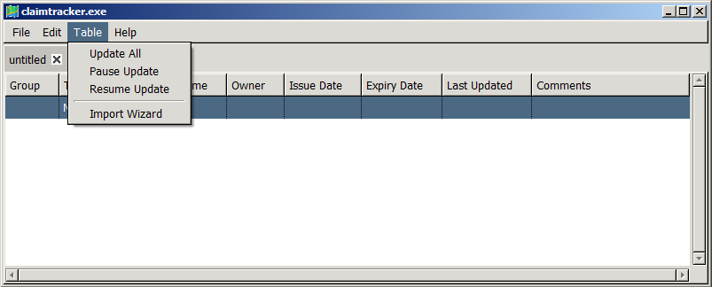
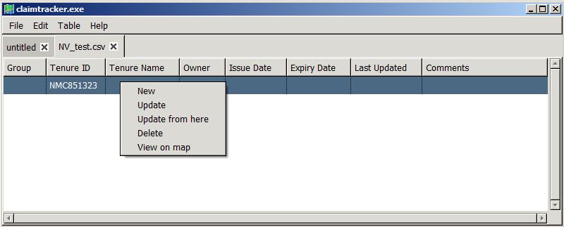

There are a number of ways to update the entries that populate a table in
claimtracker, either through the Table menu or through a right-click context menu
The Table menu is shown below:

Table>>Update All will update all the entries in the table sequentially, beginning
from the top. Table>>Pause Update will pause the sequence, (but does not interupt
the current entry from being updated. ie. there is a delay.) Table>>Resume Update
will resume the sequence. The right-click context menu can be used to update
indvidual entries out-of-sequence, or to start the sequence from somewhere other than
the top entry. The context menu is shown below:

An update sequence started from the context menu can be paused and resumed using
the Table menu.